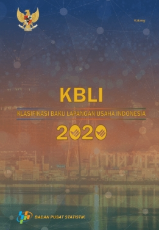

<?php include('layout/header.php')?>
<link rel="stylesheet" href="css/pages/quick-KBLI.css" />
<main>
	<section class="page-header--quick">
		<div class="container">
			<div class="row">
				<div class="col-md-10">
					<h3 class="page-header__subtitle"
					data-aos="fade-up"
						data-aos-duration="500"
						data-aos-easing="ease-in-sine">Quick Tools</h3>
					<h2
						class="page-header__title"
						data-aos="fade-up"
						data-aos-duration="700"
						data-aos-easing="ease-in-sine"
					>
						Indonesian Industrial Standard Classifications (KBLI)
					</h2>

					<p class="page-header__description" data-aos="fade-up"
						data-aos-duration="1000"
						data-aos-easing="ease-in-sine">
						KBLI 2020 diluncurkan awal Oktober 2020 oleh BPS
						berdasarkan Perban No. Tahun 2020 tentang Penyempurnaan
						KBLI 2017, karena tuntutan dan penambahan lapangan
						pekerjaan baru contohnya konten kreatif.
					</p>
				</div>
			</div>
		</div>
	</section>
	<section class="quick-KBLI section-padding--bottom">
		<div class="container">
			<div class="row" data-aos="fade-up"
						data-aos-duration="1000"
						data-aos-easing="ease-in-sine">
				<div class="col-md-12">
					<table
						id="quickKBLI"
						class="table table-responsive-lg table-striped table-hover dataTable"
						style="width: 100%"
					>
						<thead>
							<tr>
								<th>KBLI</th>
								<th>TITLE</th>
								<th>DESCRIPTION</th>
							</tr>
						</thead>
						<tbody>
							<tr>
								<td data-title="KBLI">A</td>
								<td data-title="TITLE">Pertanian, Kehutanan, dan Perikanan</td>
								<td data-title="DESCR">
									Kategori ini mencakup semua kegiatan
									ekonomi/lapangan usaha, yang meliputi
									pertanian tanaman pangan, perkebunan,
									hortikultura, peternakan, pemanenan hasil
									hutan serta penangkapan dan budidaya
									ikan/biota air. Kategori ini juga mencakup
									jasa penunjang masing-masing kegiatan
									ekonomi tersebut.
								</td>
							</tr>

							<tr>
								<td data-title="KBLI">01</td>
								<td data-title="TITLE">
									Pertanian Tanaman, Peternakan, Perburuan dan
									Kegiatan YBDI
								</td>
								<td data-title="DESCR">
									Golongan pokok ini mencakup pertanian
									tanaman pangan, perkebunan dan hortikultura;
									usaha pemeliharaan hewan ternak dan unggas;
									perburuan dan penangkapan hewan dengan
									perangkap serta kegiatan penunjang ybdi yang
									ditujukan untuk dijual. Termasuk budidaya
									tanaman dan hewan ternak secara organik dan
									genetik. Kegiatan pertanian tidak mencakup
									kegiatan pengolahan dari komoditas
									pertanian, termasuk dalam Kategori C
									(Industri Pengolahan). Kegiatan konstruksi
									lahan seperti pembuatan petak- petak sawah,
									irigasi saluran pembuangan air, serta
									pembersihan dan perbaikan lahan untuk
									pertanian tidak termasuk di sini, tetapi
									tercakup pada kategori konstruksi (F).
								</td>
							</tr>
							<tr>
								<td data-title="KBLI">011</td>
								<td data-title="TITLE">Pertanian Tanaman Semusim</td>
								<td data-title="DESCR">
									Golongan ini mencakup penanaman tanaman yang
									tidak berlangsung lebih dari dua musim
									panen. Termasuk penanaman tanaman dalam
									berbagai media dan budidaya tanaman secara
									genetik, dan juga penanaman untuk tujuan
									pembibitan dan pembenihan.
								</td>
							</tr>
							<tr>
								<td data-title="KBLI">0111</td>
								<td data-title="TITLE">
									Pertanian Serealia (bukan Padi), Aneka
									Kacang dan Biji-bijian Penghasil Minyak
								</td>
								<td data-title="DESCR">
									Subgolongan ini mencakup pertanian semua
									serealia, aneka kacang dan biji-bijian
									penghasil minyak di lahan terbuka, termasuk
									pertanian tanaman organik dan pertanian
									tanaman yang telah dimodifikasi. Pertanian
									tanaman ini sering dikombinasikan dalam unit
									pertanian.Subgolongan ini mencakup :-
									Pertanian serealia seperti gandum, jagung,
									sorgum, gandum untuk membuat bir (barley),
									gandum hitam (rye), oats, millet dan
									serealia lainnya- Pertanian aneka kacang
									palawija, mencakup kacang kedelai, kacang
									tanah dan kacang hijau- Pertanian aneka
									kacang hortikultura, mencakup buncis, buncis
									besar, kacang panjang, cow peas, miju-miju,
									lupin, kacang polong, pigeon peas dan
									tanaman aneka kacang lainnya- Pertanian
									biji-bijian penghasil minyak, seperti biji
									kapas, biji castor, biji rami, biji mustard,
									niger seeds, rapeseed/canola, biji wijen,
									safflower seeds, biji bunga matahari dan
									tanaman penghasil minyak lainnyaSubgolongan
									ini tidak mencakup :- Pertanian jagung
									(maize) untuk makanan ternak, lihat 0119
								</td>
							</tr>
							<tr>
								<td data-title="KBLI">01111</td>
								<td data-title="TITLE">Pertanian Jagung</td>
								<td data-title="DESCR">
									Kelompok ini mencakup usaha pertanian
									komoditas jagung mulai dari kegiatan
									pengolahan lahan, penanaman, pemeliharaan,
									dan juga pemanenan dan pasca panen jika
									menjadi satu kesatuan kegiatan tanaman
									jagung. Termasuk kegiatan pembibitan dan
									pembenihan tanaman jagung.
								</td>
							</tr>
						</tbody>
					</table>
				</div>
			</div>
		</div>
	</section>
	<div class="kbli-download section-padding--bottom">
		<div class="container kbli-download__inner">
			<div class="row align-items-center">
				<div class="col-md-5">
					<div class="kbli-download__images">
						
					</div>
				</div>
				<div class="col-md-7 ">
					<div class="kbli-download__info">
						<h2 class="kbli-download__info-title">Download the PDF Version of KBLI 2020</h2>
						<a href="/images/testimonial-1.png" download="" class="btn btn-primary element mt-4"><i class="fas fa-download"></i> DOWNLOAD</a>
					</div>
				</div>
			</div>
		</div>
	</div>
</main>
<script src="js/datatables.min.js"></script>
<script src="js/quickkbli.js"></script>

<?php include('layout/footer.php');?>
